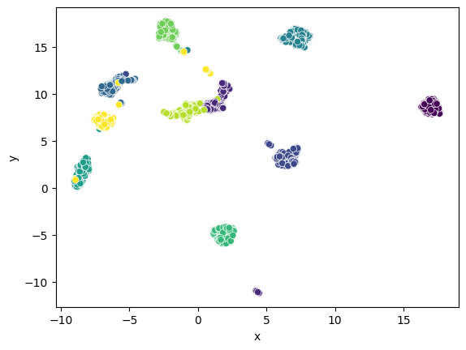
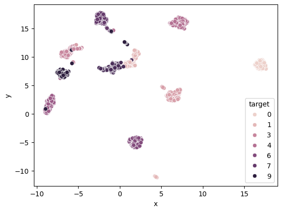
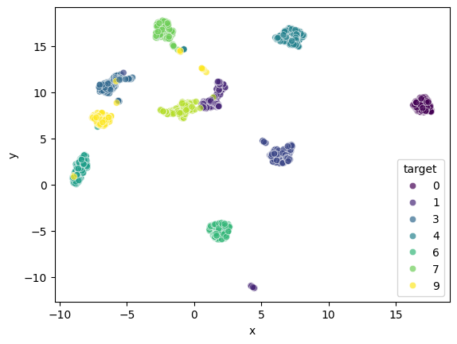
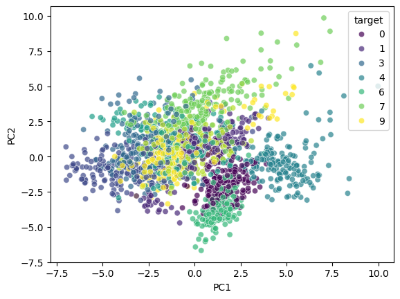
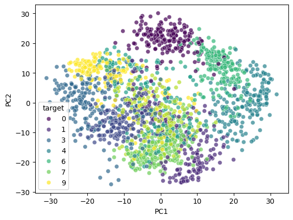

from sklearn import datasets
import seaborn as sns
import pandas as pd
import numpy as np
import umap Connected to base (Python 3.11.4)
digits = datasets.load_digits()model = umap.UMAP(metric="euclidean", n_neighbors=15, n_jobs=16).fit(digits.data)model.transform()--------------------------------------------------------------------------- TypeError Traceback (most recent call last) Cell In[4], line 1 ----> 1 model.transform() TypeError: UMAP.transform() missing 1 required positional argument: 'X'
model.transform(digits.data)array([[15.841952 , 5.0676193 ],
[ 0.46377385, 11.460215 ],
[ 2.6353385 , 8.794771 ],
...,
[-0.98420984, 9.280262 ],
[-5.408144 , 4.191199 ],
[-1.3129224 , 8.704093 ]], dtype=float32)emb = umap.UMAP(metric="euclidean", n_neighbors=15, n_jobs=16).fit_transform(digits.data)df = pd.DataFrame(data=emb)
#model.plot.points(model, labels=digits.target, width=400, height=400)df = pd.DataFrame(data=emb, columns=["x", "y"])
df["target"] = digits.values
sns.scatterplot(x="x", y="y", c="target")
#model.plot.points(model, labels=digits.target, width=400, height=400)--------------------------------------------------------------------------- ValueError Traceback (most recent call last) File /home/sadit/Cursos/MEIA2025/umap.qmd:3 1 df = pd.DataFrame(data=emb, columns=["x", "y"]) 2 df["target"] = digits.values ----> 3 sns.scatterplot(x="x", y="y", c="target") 4 #model.plot.points(model, labels=digits.target, width=400, height=400) File ~/miniconda3/lib/python3.11/site-packages/seaborn/relational.py:615, in scatterplot(data, x, y, hue, size, style, palette, hue_order, hue_norm, sizes, size_order, size_norm, markers, style_order, legend, ax, **kwargs) 606 def scatterplot( 607 data=None, *, 608 x=None, y=None, hue=None, size=None, style=None, (...) 612 **kwargs 613 ): --> 615 p = _ScatterPlotter( 616 data=data, 617 variables=dict(x=x, y=y, hue=hue, size=size, style=style), 618 legend=legend 619 ) 621 p.map_hue(palette=palette, order=hue_order, norm=hue_norm) 622 p.map_size(sizes=sizes, order=size_order, norm=size_norm) File ~/miniconda3/lib/python3.11/site-packages/seaborn/relational.py:396, in _ScatterPlotter.__init__(self, data, variables, legend) 387 def __init__(self, *, data=None, variables={}, legend=None): 388 389 # TODO this is messy, we want the mapping to be agnostic about 390 # the kind of plot to draw, but for the time being we need to set 391 # this information so the SizeMapping can use it 392 self._default_size_range = ( 393 np.r_[.5, 2] * np.square(mpl.rcParams["lines.markersize"]) 394 ) --> 396 super().__init__(data=data, variables=variables) 398 self.legend = legend File ~/miniconda3/lib/python3.11/site-packages/seaborn/_base.py:634, in VectorPlotter.__init__(self, data, variables) 629 # var_ordered is relevant only for categorical axis variables, and may 630 # be better handled by an internal axis information object that tracks 631 # such information and is set up by the scale_* methods. The analogous 632 # information for numeric axes would be information about log scales. 633 self._var_ordered = {"x": False, "y": False} # alt., used DefaultDict --> 634 self.assign_variables(data, variables) 636 # TODO Lots of tests assume that these are called to initialize the 637 # mappings to default values on class initialization. I'd prefer to 638 # move away from that and only have a mapping when explicitly called. 639 for var in ["hue", "size", "style"]: File ~/miniconda3/lib/python3.11/site-packages/seaborn/_base.py:679, in VectorPlotter.assign_variables(self, data, variables) 674 else: 675 # When dealing with long-form input, use the newer PlotData 676 # object (internal but introduced for the objects interface) 677 # to centralize / standardize data consumption logic. 678 self.input_format = "long" --> 679 plot_data = PlotData(data, variables) 680 frame = plot_data.frame 681 names = plot_data.names File ~/miniconda3/lib/python3.11/site-packages/seaborn/_core/data.py:58, in PlotData.__init__(self, data, variables) 51 def __init__( 52 self, 53 data: DataSource, 54 variables: dict[str, VariableSpec], 55 ): 57 data = handle_data_source(data) ---> 58 frame, names, ids = self._assign_variables(data, variables) 60 self.frame = frame 61 self.names = names File ~/miniconda3/lib/python3.11/site-packages/seaborn/_core/data.py:232, in PlotData._assign_variables(self, data, variables) 230 else: 231 err += "An entry with this name does not appear in `data`." --> 232 raise ValueError(err) 234 else: 235 236 # Otherwise, assume the value somehow represents data 237 238 # Ignore empty data structures 239 if isinstance(val, Sized) and len(val) == 0: ValueError: Could not interpret value `x` for `x`. Value is a string, but `data` was not passed.
df = pd.DataFrame(data=emb, columns=["x", "y"])
df["target"] = digits.values
sns.scatterplot(x="x", y="y", c="target", data=df)
#model.plot.points(model, labels=digits.target, width=400, height=400)--------------------------------------------------------------------------- ValueError Traceback (most recent call last) File ~/miniconda3/lib/python3.11/site-packages/matplotlib/axes/_axes.py:4618, in Axes._parse_scatter_color_args(c, edgecolors, kwargs, xsize, get_next_color_func) 4617 try: # Is 'c' acceptable as PathCollection facecolors? -> 4618 colors = mcolors.to_rgba_array(c) 4619 except (TypeError, ValueError) as err: File ~/miniconda3/lib/python3.11/site-packages/matplotlib/colors.py:496, in to_rgba_array(c, alpha) 495 if isinstance(c, str): --> 496 raise ValueError(f"{c!r} is not a valid color value.") 498 if len(c) == 0: ValueError: 'target' is not a valid color value. The above exception was the direct cause of the following exception: ValueError Traceback (most recent call last) File /home/sadit/Cursos/MEIA2025/umap.qmd:3 1 df = pd.DataFrame(data=emb, columns=["x", "y"]) 2 df["target"] = digits.values ----> 3 sns.scatterplot(x="x", y="y", c="target", data=df) 4 #model.plot.points(model, labels=digits.target, width=400, height=400) File ~/miniconda3/lib/python3.11/site-packages/seaborn/relational.py:634, in scatterplot(data, x, y, hue, size, style, palette, hue_order, hue_norm, sizes, size_order, size_norm, markers, style_order, legend, ax, **kwargs) 631 p._attach(ax) 633 color = kwargs.pop("color", None) --> 634 kwargs["color"] = _default_color(ax.scatter, hue, color, kwargs) 636 p.plot(ax, kwargs) 638 return ax File ~/miniconda3/lib/python3.11/site-packages/seaborn/utils.py:105, in _default_color(method, hue, color, kws, saturation) 99 scout_size = max( 100 np.atleast_1d(kws.get(key, [])).shape[0] 101 for key in ["s", "c", "fc", "facecolor", "facecolors"] 102 ) 103 scout_x = scout_y = np.full(scout_size, np.nan) --> 105 scout = method(scout_x, scout_y, **kws) 106 facecolors = scout.get_facecolors() 108 if not len(facecolors): 109 # Handle bug in matplotlib <= 3.2 (I think) 110 # This will limit the ability to use non color= kwargs to specify 111 # a color in versions of matplotlib with the bug, but trying to 112 # work out what the user wanted by re-implementing the broken logic 113 # of inspecting the kwargs is probably too brittle. File ~/miniconda3/lib/python3.11/site-packages/matplotlib/__init__.py:1473, in _preprocess_data.<locals>.inner(ax, data, *args, **kwargs) 1470 @functools.wraps(func) 1471 def inner(ax, *args, data=None, **kwargs): 1472 if data is None: -> 1473 return func( 1474 ax, 1475 *map(sanitize_sequence, args), 1476 **{k: sanitize_sequence(v) for k, v in kwargs.items()}) 1478 bound = new_sig.bind(ax, *args, **kwargs) 1479 auto_label = (bound.arguments.get(label_namer) 1480 or bound.kwargs.get(label_namer)) File ~/miniconda3/lib/python3.11/site-packages/matplotlib/axes/_axes.py:4805, in Axes.scatter(self, x, y, s, c, marker, cmap, norm, vmin, vmax, alpha, linewidths, edgecolors, plotnonfinite, **kwargs) 4802 if edgecolors is None: 4803 orig_edgecolor = kwargs.get('edgecolor', None) 4804 c, colors, edgecolors = \ -> 4805 self._parse_scatter_color_args( 4806 c, edgecolors, kwargs, x.size, 4807 get_next_color_func=self._get_patches_for_fill.get_next_color) 4809 if plotnonfinite and colors is None: 4810 c = np.ma.masked_invalid(c) File ~/miniconda3/lib/python3.11/site-packages/matplotlib/axes/_axes.py:4627, in Axes._parse_scatter_color_args(c, edgecolors, kwargs, xsize, get_next_color_func) 4624 raise invalid_shape_exception(c.size, xsize) from err 4625 # Both the mapping *and* the RGBA conversion failed: pretty 4626 # severe failure => one may appreciate a verbose feedback. -> 4627 raise ValueError( 4628 f"'c' argument must be a color, a sequence of colors, " 4629 f"or a sequence of numbers, not {c!r}") from err 4630 else: 4631 if len(colors) not in (0, 1, xsize): 4632 # NB: remember that a single color is also acceptable. 4633 # Besides *colors* will be an empty array if c == 'none'. ValueError: 'c' argument must be a color, a sequence of colors, or a sequence of numbers, not 'target'

df = pd.DataFrame(data=emb, columns=["x", "y"])
df["target"] = digits.values
sns.scatterplot(x="x", y="y", color="target", data=df)
#model.plot.points(model, labels=digits.target, width=400, height=400)--------------------------------------------------------------------------- ValueError Traceback (most recent call last) File ~/miniconda3/lib/python3.11/site-packages/matplotlib/axes/_axes.py:4557, in Axes._parse_scatter_color_args(c, edgecolors, kwargs, xsize, get_next_color_func) 4556 try: -> 4557 mcolors.to_rgba_array(kwcolor) 4558 except ValueError as err: File ~/miniconda3/lib/python3.11/site-packages/matplotlib/colors.py:496, in to_rgba_array(c, alpha) 495 if isinstance(c, str): --> 496 raise ValueError(f"{c!r} is not a valid color value.") 498 if len(c) == 0: ValueError: 'target' is not a valid color value. The above exception was the direct cause of the following exception: ValueError Traceback (most recent call last) File /home/sadit/Cursos/MEIA2025/umap.qmd:3 1 df = pd.DataFrame(data=emb, columns=["x", "y"]) 2 df["target"] = digits.values ----> 3 sns.scatterplot(x="x", y="y", color="target", data=df) 4 #model.plot.points(model, labels=digits.target, width=400, height=400) File ~/miniconda3/lib/python3.11/site-packages/seaborn/relational.py:636, in scatterplot(data, x, y, hue, size, style, palette, hue_order, hue_norm, sizes, size_order, size_norm, markers, style_order, legend, ax, **kwargs) 633 color = kwargs.pop("color", None) 634 kwargs["color"] = _default_color(ax.scatter, hue, color, kwargs) --> 636 p.plot(ax, kwargs) 638 return ax File ~/miniconda3/lib/python3.11/site-packages/seaborn/relational.py:438, in _ScatterPlotter.plot(self, ax, kws) 435 kws.setdefault("edgecolor", "w") 437 # Draw the scatter plot --> 438 points = ax.scatter(x=x, y=y, **kws) 440 # Apply the mapping from semantic variables to artist attributes 442 if "hue" in self.variables: File ~/miniconda3/lib/python3.11/site-packages/matplotlib/__init__.py:1473, in _preprocess_data.<locals>.inner(ax, data, *args, **kwargs) 1470 @functools.wraps(func) 1471 def inner(ax, *args, data=None, **kwargs): 1472 if data is None: -> 1473 return func( 1474 ax, 1475 *map(sanitize_sequence, args), 1476 **{k: sanitize_sequence(v) for k, v in kwargs.items()}) 1478 bound = new_sig.bind(ax, *args, **kwargs) 1479 auto_label = (bound.arguments.get(label_namer) 1480 or bound.kwargs.get(label_namer)) File ~/miniconda3/lib/python3.11/site-packages/matplotlib/axes/_axes.py:4805, in Axes.scatter(self, x, y, s, c, marker, cmap, norm, vmin, vmax, alpha, linewidths, edgecolors, plotnonfinite, **kwargs) 4802 if edgecolors is None: 4803 orig_edgecolor = kwargs.get('edgecolor', None) 4804 c, colors, edgecolors = \ -> 4805 self._parse_scatter_color_args( 4806 c, edgecolors, kwargs, x.size, 4807 get_next_color_func=self._get_patches_for_fill.get_next_color) 4809 if plotnonfinite and colors is None: 4810 c = np.ma.masked_invalid(c) File ~/miniconda3/lib/python3.11/site-packages/matplotlib/axes/_axes.py:4559, in Axes._parse_scatter_color_args(c, edgecolors, kwargs, xsize, get_next_color_func) 4557 mcolors.to_rgba_array(kwcolor) 4558 except ValueError as err: -> 4559 raise ValueError( 4560 "'color' kwarg must be a color or sequence of color " 4561 "specs. For a sequence of values to be color-mapped, use " 4562 "the 'c' argument instead.") from err 4563 if edgecolors is None: 4564 edgecolors = kwcolor ValueError: 'color' kwarg must be a color or sequence of color specs. For a sequence of values to be color-mapped, use the 'c' argument instead.

df = pd.DataFrame(data=emb, columns=["x", "y"])
df["target"] = digits.values
sns.scatterplot(x="x", y="y", c="target", data=df)
#model.plot.points(model, labels=digits.target, width=400, height=400)--------------------------------------------------------------------------- ValueError Traceback (most recent call last) File ~/miniconda3/lib/python3.11/site-packages/matplotlib/axes/_axes.py:4618, in Axes._parse_scatter_color_args(c, edgecolors, kwargs, xsize, get_next_color_func) 4617 try: # Is 'c' acceptable as PathCollection facecolors? -> 4618 colors = mcolors.to_rgba_array(c) 4619 except (TypeError, ValueError) as err: File ~/miniconda3/lib/python3.11/site-packages/matplotlib/colors.py:496, in to_rgba_array(c, alpha) 495 if isinstance(c, str): --> 496 raise ValueError(f"{c!r} is not a valid color value.") 498 if len(c) == 0: ValueError: 'target' is not a valid color value. The above exception was the direct cause of the following exception: ValueError Traceback (most recent call last) File /home/sadit/Cursos/MEIA2025/umap.qmd:3 1 df = pd.DataFrame(data=emb, columns=["x", "y"]) 2 df["target"] = digits.values ----> 3 sns.scatterplot(x="x", y="y", c="target", data=df) 4 #model.plot.points(model, labels=digits.target, width=400, height=400) File ~/miniconda3/lib/python3.11/site-packages/seaborn/relational.py:634, in scatterplot(data, x, y, hue, size, style, palette, hue_order, hue_norm, sizes, size_order, size_norm, markers, style_order, legend, ax, **kwargs) 631 p._attach(ax) 633 color = kwargs.pop("color", None) --> 634 kwargs["color"] = _default_color(ax.scatter, hue, color, kwargs) 636 p.plot(ax, kwargs) 638 return ax File ~/miniconda3/lib/python3.11/site-packages/seaborn/utils.py:105, in _default_color(method, hue, color, kws, saturation) 99 scout_size = max( 100 np.atleast_1d(kws.get(key, [])).shape[0] 101 for key in ["s", "c", "fc", "facecolor", "facecolors"] 102 ) 103 scout_x = scout_y = np.full(scout_size, np.nan) --> 105 scout = method(scout_x, scout_y, **kws) 106 facecolors = scout.get_facecolors() 108 if not len(facecolors): 109 # Handle bug in matplotlib <= 3.2 (I think) 110 # This will limit the ability to use non color= kwargs to specify 111 # a color in versions of matplotlib with the bug, but trying to 112 # work out what the user wanted by re-implementing the broken logic 113 # of inspecting the kwargs is probably too brittle. File ~/miniconda3/lib/python3.11/site-packages/matplotlib/__init__.py:1473, in _preprocess_data.<locals>.inner(ax, data, *args, **kwargs) 1470 @functools.wraps(func) 1471 def inner(ax, *args, data=None, **kwargs): 1472 if data is None: -> 1473 return func( 1474 ax, 1475 *map(sanitize_sequence, args), 1476 **{k: sanitize_sequence(v) for k, v in kwargs.items()}) 1478 bound = new_sig.bind(ax, *args, **kwargs) 1479 auto_label = (bound.arguments.get(label_namer) 1480 or bound.kwargs.get(label_namer)) File ~/miniconda3/lib/python3.11/site-packages/matplotlib/axes/_axes.py:4805, in Axes.scatter(self, x, y, s, c, marker, cmap, norm, vmin, vmax, alpha, linewidths, edgecolors, plotnonfinite, **kwargs) 4802 if edgecolors is None: 4803 orig_edgecolor = kwargs.get('edgecolor', None) 4804 c, colors, edgecolors = \ -> 4805 self._parse_scatter_color_args( 4806 c, edgecolors, kwargs, x.size, 4807 get_next_color_func=self._get_patches_for_fill.get_next_color) 4809 if plotnonfinite and colors is None: 4810 c = np.ma.masked_invalid(c) File ~/miniconda3/lib/python3.11/site-packages/matplotlib/axes/_axes.py:4627, in Axes._parse_scatter_color_args(c, edgecolors, kwargs, xsize, get_next_color_func) 4624 raise invalid_shape_exception(c.size, xsize) from err 4625 # Both the mapping *and* the RGBA conversion failed: pretty 4626 # severe failure => one may appreciate a verbose feedback. -> 4627 raise ValueError( 4628 f"'c' argument must be a color, a sequence of colors, " 4629 f"or a sequence of numbers, not {c!r}") from err 4630 else: 4631 if len(colors) not in (0, 1, xsize): 4632 # NB: remember that a single color is also acceptable. 4633 # Besides *colors* will be an empty array if c == 'none'. ValueError: 'c' argument must be a color, a sequence of colors, or a sequence of numbers, not 'target'

digits.values<function Bunch.values>digits.imagesarray([[[ 0., 0., 5., ..., 1., 0., 0.],
[ 0., 0., 13., ..., 15., 5., 0.],
[ 0., 3., 15., ..., 11., 8., 0.],
...,
[ 0., 4., 11., ..., 12., 7., 0.],
[ 0., 2., 14., ..., 12., 0., 0.],
[ 0., 0., 6., ..., 0., 0., 0.]],
[[ 0., 0., 0., ..., 5., 0., 0.],
[ 0., 0., 0., ..., 9., 0., 0.],
[ 0., 0., 3., ..., 6., 0., 0.],
...,
[ 0., 0., 1., ..., 6., 0., 0.],
[ 0., 0., 1., ..., 6., 0., 0.],
[ 0., 0., 0., ..., 10., 0., 0.]],
[[ 0., 0., 0., ..., 12., 0., 0.],
[ 0., 0., 3., ..., 14., 0., 0.],
[ 0., 0., 8., ..., 16., 0., 0.],
...,
[ 0., 9., 16., ..., 0., 0., 0.],
[ 0., 3., 13., ..., 11., 5., 0.],
[ 0., 0., 0., ..., 16., 9., 0.]],
...,
[[ 0., 0., 1., ..., 1., 0., 0.],
[ 0., 0., 13., ..., 2., 1., 0.],
[ 0., 0., 16., ..., 16., 5., 0.],
...,
[ 0., 0., 16., ..., 15., 0., 0.],
[ 0., 0., 15., ..., 16., 0., 0.],
[ 0., 0., 2., ..., 6., 0., 0.]],
[[ 0., 0., 2., ..., 0., 0., 0.],
[ 0., 0., 14., ..., 15., 1., 0.],
[ 0., 4., 16., ..., 16., 7., 0.],
...,
[ 0., 0., 0., ..., 16., 2., 0.],
[ 0., 0., 4., ..., 16., 2., 0.],
[ 0., 0., 5., ..., 12., 0., 0.]],
[[ 0., 0., 10., ..., 1., 0., 0.],
[ 0., 2., 16., ..., 1., 0., 0.],
[ 0., 0., 15., ..., 15., 0., 0.],
...,
[ 0., 4., 16., ..., 16., 6., 0.],
[ 0., 8., 16., ..., 16., 8., 0.],
[ 0., 1., 8., ..., 12., 1., 0.]]])digits.DESCR".. _digits_dataset:\n\nOptical recognition of handwritten digits dataset\n--------------------------------------------------\n\n**Data Set Characteristics:**\n\n :Number of Instances: 1797\n :Number of Attributes: 64\n :Attribute Information: 8x8 image of integer pixels in the range 0..16.\n :Missing Attribute Values: None\n :Creator: E. Alpaydin (alpaydin '@' boun.edu.tr)\n :Date: July; 1998\n\nThis is a copy of the test set of the UCI ML hand-written digits datasets\nhttps://archive.ics.uci.edu/ml/datasets/Optical+Recognition+of+Handwritten+Digits\n\nThe data set contains images of hand-written digits: 10 classes where\neach class refers to a digit.\n\nPreprocessing programs made available by NIST were used to extract\nnormalized bitmaps of handwritten digits from a preprinted form. From a\ntotal of 43 people, 30 contributed to the training set and different 13\nto the test set. 32x32 bitmaps are divided into nonoverlapping blocks of\n4x4 and the number of on pixels are counted in each block. This generates\nan input matrix of 8x8 where each element is an integer in the range\n0..16. This reduces dimensionality and gives invariance to small\ndistortions.\n\nFor info on NIST preprocessing routines, see M. D. Garris, J. L. Blue, G.\nT. Candela, D. L. Dimmick, J. Geist, P. J. Grother, S. A. Janet, and C.\nL. Wilson, NIST Form-Based Handprint Recognition System, NISTIR 5469,\n1994.\n\n|details-start|\n**References**\n|details-split|\n\n- C. Kaynak (1995) Methods of Combining Multiple Classifiers and Their\n Applications to Handwritten Digit Recognition, MSc Thesis, Institute of\n Graduate Studies in Science and Engineering, Bogazici University.\n- E. Alpaydin, C. Kaynak (1998) Cascading Classifiers, Kybernetika.\n- Ken Tang and Ponnuthurai N. Suganthan and Xi Yao and A. Kai Qin.\n Linear dimensionalityreduction using relevance weighted LDA. School of\n Electrical and Electronic Engineering Nanyang Technological University.\n 2005.\n- Claudio Gentile. A New Approximate Maximal Margin Classification\n Algorithm. NIPS. 2000.\n\n|details-end|"digits.feature_names['pixel_0_0',
'pixel_0_1',
'pixel_0_2',
'pixel_0_3',
'pixel_0_4',
'pixel_0_5',
'pixel_0_6',
'pixel_0_7',
'pixel_1_0',
'pixel_1_1',
'pixel_1_2',
'pixel_1_3',
'pixel_1_4',
'pixel_1_5',
'pixel_1_6',
'pixel_1_7',
'pixel_2_0',
'pixel_2_1',
'pixel_2_2',
'pixel_2_3',
'pixel_2_4',
'pixel_2_5',
'pixel_2_6',
'pixel_2_7',
'pixel_3_0',
'pixel_3_1',
'pixel_3_2',
'pixel_3_3',
'pixel_3_4',
'pixel_3_5',
'pixel_3_6',
'pixel_3_7',
'pixel_4_0',
'pixel_4_1',
'pixel_4_2',
'pixel_4_3',
'pixel_4_4',
'pixel_4_5',
'pixel_4_6',
'pixel_4_7',
'pixel_5_0',
'pixel_5_1',
'pixel_5_2',
'pixel_5_3',
'pixel_5_4',
'pixel_5_5',
'pixel_5_6',
'pixel_5_7',
'pixel_6_0',
'pixel_6_1',
'pixel_6_2',
'pixel_6_3',
'pixel_6_4',
'pixel_6_5',
'pixel_6_6',
'pixel_6_7',
'pixel_7_0',
'pixel_7_1',
'pixel_7_2',
'pixel_7_3',
'pixel_7_4',
'pixel_7_5',
'pixel_7_6',
'pixel_7_7']digits.targetarray([0, 1, 2, ..., 8, 9, 8])df = pd.DataFrame(data=emb, columns=["x", "y"])
df["target"] = digits.target
sns.scatterplot(x="x", y="y", c="target", data=df)
#model.plot.points(model, labels=digits.target, width=400, height=400)--------------------------------------------------------------------------- ValueError Traceback (most recent call last) File ~/miniconda3/lib/python3.11/site-packages/matplotlib/axes/_axes.py:4618, in Axes._parse_scatter_color_args(c, edgecolors, kwargs, xsize, get_next_color_func) 4617 try: # Is 'c' acceptable as PathCollection facecolors? -> 4618 colors = mcolors.to_rgba_array(c) 4619 except (TypeError, ValueError) as err: File ~/miniconda3/lib/python3.11/site-packages/matplotlib/colors.py:496, in to_rgba_array(c, alpha) 495 if isinstance(c, str): --> 496 raise ValueError(f"{c!r} is not a valid color value.") 498 if len(c) == 0: ValueError: 'target' is not a valid color value. The above exception was the direct cause of the following exception: ValueError Traceback (most recent call last) File /home/sadit/Cursos/MEIA2025/umap.qmd:3 1 df = pd.DataFrame(data=emb, columns=["x", "y"]) 2 df["target"] = digits.target ----> 3 sns.scatterplot(x="x", y="y", c="target", data=df) 4 #model.plot.points(model, labels=digits.target, width=400, height=400) File ~/miniconda3/lib/python3.11/site-packages/seaborn/relational.py:634, in scatterplot(data, x, y, hue, size, style, palette, hue_order, hue_norm, sizes, size_order, size_norm, markers, style_order, legend, ax, **kwargs) 631 p._attach(ax) 633 color = kwargs.pop("color", None) --> 634 kwargs["color"] = _default_color(ax.scatter, hue, color, kwargs) 636 p.plot(ax, kwargs) 638 return ax File ~/miniconda3/lib/python3.11/site-packages/seaborn/utils.py:105, in _default_color(method, hue, color, kws, saturation) 99 scout_size = max( 100 np.atleast_1d(kws.get(key, [])).shape[0] 101 for key in ["s", "c", "fc", "facecolor", "facecolors"] 102 ) 103 scout_x = scout_y = np.full(scout_size, np.nan) --> 105 scout = method(scout_x, scout_y, **kws) 106 facecolors = scout.get_facecolors() 108 if not len(facecolors): 109 # Handle bug in matplotlib <= 3.2 (I think) 110 # This will limit the ability to use non color= kwargs to specify 111 # a color in versions of matplotlib with the bug, but trying to 112 # work out what the user wanted by re-implementing the broken logic 113 # of inspecting the kwargs is probably too brittle. File ~/miniconda3/lib/python3.11/site-packages/matplotlib/__init__.py:1473, in _preprocess_data.<locals>.inner(ax, data, *args, **kwargs) 1470 @functools.wraps(func) 1471 def inner(ax, *args, data=None, **kwargs): 1472 if data is None: -> 1473 return func( 1474 ax, 1475 *map(sanitize_sequence, args), 1476 **{k: sanitize_sequence(v) for k, v in kwargs.items()}) 1478 bound = new_sig.bind(ax, *args, **kwargs) 1479 auto_label = (bound.arguments.get(label_namer) 1480 or bound.kwargs.get(label_namer)) File ~/miniconda3/lib/python3.11/site-packages/matplotlib/axes/_axes.py:4805, in Axes.scatter(self, x, y, s, c, marker, cmap, norm, vmin, vmax, alpha, linewidths, edgecolors, plotnonfinite, **kwargs) 4802 if edgecolors is None: 4803 orig_edgecolor = kwargs.get('edgecolor', None) 4804 c, colors, edgecolors = \ -> 4805 self._parse_scatter_color_args( 4806 c, edgecolors, kwargs, x.size, 4807 get_next_color_func=self._get_patches_for_fill.get_next_color) 4809 if plotnonfinite and colors is None: 4810 c = np.ma.masked_invalid(c) File ~/miniconda3/lib/python3.11/site-packages/matplotlib/axes/_axes.py:4627, in Axes._parse_scatter_color_args(c, edgecolors, kwargs, xsize, get_next_color_func) 4624 raise invalid_shape_exception(c.size, xsize) from err 4625 # Both the mapping *and* the RGBA conversion failed: pretty 4626 # severe failure => one may appreciate a verbose feedback. -> 4627 raise ValueError( 4628 f"'c' argument must be a color, a sequence of colors, " 4629 f"or a sequence of numbers, not {c!r}") from err 4630 else: 4631 if len(colors) not in (0, 1, xsize): 4632 # NB: remember that a single color is also acceptable. 4633 # Besides *colors* will be an empty array if c == 'none'. ValueError: 'c' argument must be a color, a sequence of colors, or a sequence of numbers, not 'target'

df = pd.DataFrame(data=emb, columns=["x", "y"])
df["target"] = digits.target
sns.scatterplot(x="x", y="y", c="target", data=df)
#model.plot.points(model, labels=digits.target, width=400, height=400)--------------------------------------------------------------------------- ValueError Traceback (most recent call last) File ~/miniconda3/lib/python3.11/site-packages/matplotlib/axes/_axes.py:4618, in Axes._parse_scatter_color_args(c, edgecolors, kwargs, xsize, get_next_color_func) 4617 try: # Is 'c' acceptable as PathCollection facecolors? -> 4618 colors = mcolors.to_rgba_array(c) 4619 except (TypeError, ValueError) as err: File ~/miniconda3/lib/python3.11/site-packages/matplotlib/colors.py:496, in to_rgba_array(c, alpha) 495 if isinstance(c, str): --> 496 raise ValueError(f"{c!r} is not a valid color value.") 498 if len(c) == 0: ValueError: 'target' is not a valid color value. The above exception was the direct cause of the following exception: ValueError Traceback (most recent call last) File /home/sadit/Cursos/MEIA2025/umap.qmd:3 1 df = pd.DataFrame(data=emb, columns=["x", "y"]) 2 df["target"] = digits.target ----> 3 sns.scatterplot(x="x", y="y", c="target", data=df) 4 #model.plot.points(model, labels=digits.target, width=400, height=400) File ~/miniconda3/lib/python3.11/site-packages/seaborn/relational.py:634, in scatterplot(data, x, y, hue, size, style, palette, hue_order, hue_norm, sizes, size_order, size_norm, markers, style_order, legend, ax, **kwargs) 631 p._attach(ax) 633 color = kwargs.pop("color", None) --> 634 kwargs["color"] = _default_color(ax.scatter, hue, color, kwargs) 636 p.plot(ax, kwargs) 638 return ax File ~/miniconda3/lib/python3.11/site-packages/seaborn/utils.py:105, in _default_color(method, hue, color, kws, saturation) 99 scout_size = max( 100 np.atleast_1d(kws.get(key, [])).shape[0] 101 for key in ["s", "c", "fc", "facecolor", "facecolors"] 102 ) 103 scout_x = scout_y = np.full(scout_size, np.nan) --> 105 scout = method(scout_x, scout_y, **kws) 106 facecolors = scout.get_facecolors() 108 if not len(facecolors): 109 # Handle bug in matplotlib <= 3.2 (I think) 110 # This will limit the ability to use non color= kwargs to specify 111 # a color in versions of matplotlib with the bug, but trying to 112 # work out what the user wanted by re-implementing the broken logic 113 # of inspecting the kwargs is probably too brittle. File ~/miniconda3/lib/python3.11/site-packages/matplotlib/__init__.py:1473, in _preprocess_data.<locals>.inner(ax, data, *args, **kwargs) 1470 @functools.wraps(func) 1471 def inner(ax, *args, data=None, **kwargs): 1472 if data is None: -> 1473 return func( 1474 ax, 1475 *map(sanitize_sequence, args), 1476 **{k: sanitize_sequence(v) for k, v in kwargs.items()}) 1478 bound = new_sig.bind(ax, *args, **kwargs) 1479 auto_label = (bound.arguments.get(label_namer) 1480 or bound.kwargs.get(label_namer)) File ~/miniconda3/lib/python3.11/site-packages/matplotlib/axes/_axes.py:4805, in Axes.scatter(self, x, y, s, c, marker, cmap, norm, vmin, vmax, alpha, linewidths, edgecolors, plotnonfinite, **kwargs) 4802 if edgecolors is None: 4803 orig_edgecolor = kwargs.get('edgecolor', None) 4804 c, colors, edgecolors = \ -> 4805 self._parse_scatter_color_args( 4806 c, edgecolors, kwargs, x.size, 4807 get_next_color_func=self._get_patches_for_fill.get_next_color) 4809 if plotnonfinite and colors is None: 4810 c = np.ma.masked_invalid(c) File ~/miniconda3/lib/python3.11/site-packages/matplotlib/axes/_axes.py:4627, in Axes._parse_scatter_color_args(c, edgecolors, kwargs, xsize, get_next_color_func) 4624 raise invalid_shape_exception(c.size, xsize) from err 4625 # Both the mapping *and* the RGBA conversion failed: pretty 4626 # severe failure => one may appreciate a verbose feedback. -> 4627 raise ValueError( 4628 f"'c' argument must be a color, a sequence of colors, " 4629 f"or a sequence of numbers, not {c!r}") from err 4630 else: 4631 if len(colors) not in (0, 1, xsize): 4632 # NB: remember that a single color is also acceptable. 4633 # Besides *colors* will be an empty array if c == 'none'. ValueError: 'c' argument must be a color, a sequence of colors, or a sequence of numbers, not 'target'

df = pd.DataFrame(data=emb, columns=["x", "y"])
df["target"] = digits.target
sns.scatterplot(x="x", y="y", c=df.target, data=df)
#model.plot.points(model, labels=digits.target, width=400, height=400)
df = pd.DataFrame(data=emb, columns=["x", "y"])
df["target"] = digits.target
sns.scatterplot(x="x", y="y", hue="target", data=df)
df = pd.DataFrame(data=emb, columns=["x", "y"])
df["target"] = digits.target
sns.scatterplot(x="x", y="y",
hue="target",palette='viridis', # Esquema de colores
alpha=0.7, data=df)
from sklearn.preprocessing import StandardScaler
from sklearn.decomposition import PCA
scaler = StandardScaler()
scaled_features = scaler.fit_transform(digits.data)
model = PCA(n_components=2)
principal_components = model.fit_transform(scaled_features)
pca_df = pd.DataFrame(data=principal_components, columns=['PC1', 'PC2'])
pca_df['target'] = digits['target']
sns.scatterplot(
data=pca_df,
x='PC1',
y='PC2',
hue='target', # Colorea los puntos según si sobrevivieron o no
palette='viridis', # Esquema de colores
alpha=0.7 # Transparencia
)
from sklearn.preprocessing import StandardScaler
from sklearn.decomposition import PCA
#scaler = StandardScaler()
#scaled_features = scaler.fit_transform(digits.data)
scaled_features = digits.data
model = PCA(n_components=2)
principal_components = model.fit_transform(scaled_features)
pca_df = pd.DataFrame(data=principal_components, columns=['PC1', 'PC2'])
pca_df['target'] = digits['target']
sns.scatterplot(
data=pca_df,
x='PC1',
y='PC2',
hue='target', # Colorea los puntos según si sobrevivieron o no
palette='viridis', # Esquema de colores
alpha=0.7 # Transparencia
)